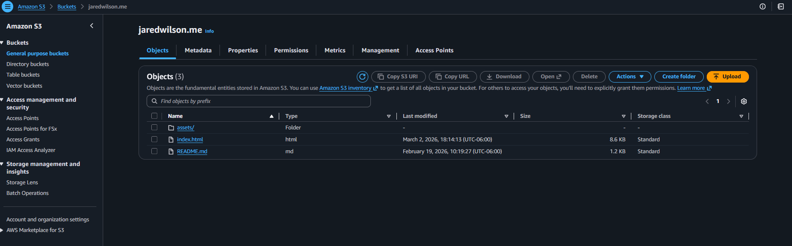
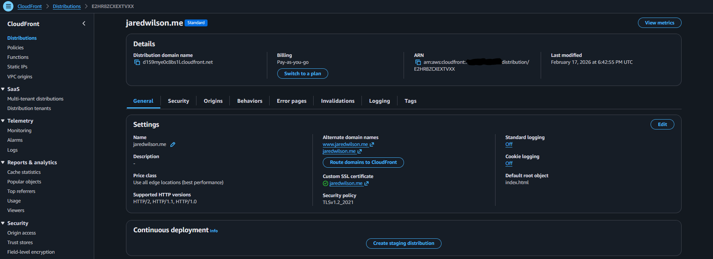
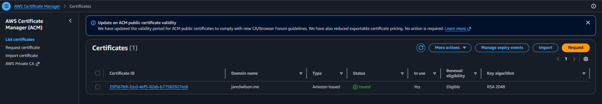
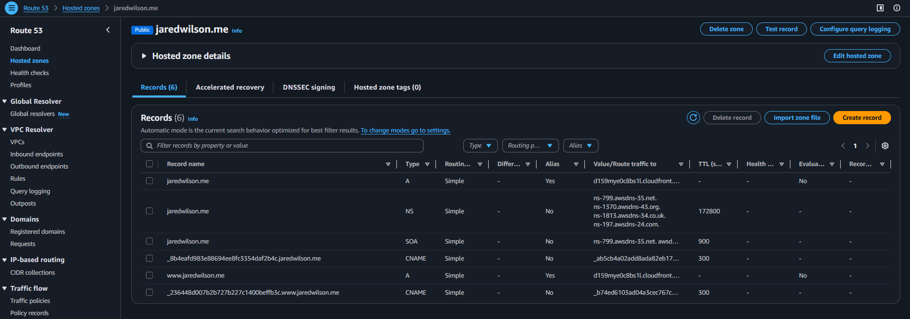
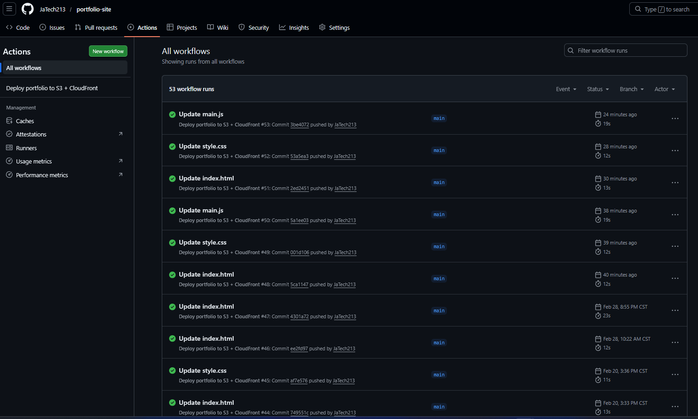
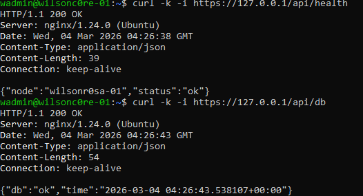

AWS Static Portfolio
Secure static hosting with CloudFront + ACM, deployed via GitHub Actions.
How I built it
This site is hosted securely on AWS using S3 + CloudFront + ACM + Route 53, deployed automatically via GitHub Actions using OIDC (no long-lived AWS keys).
Architecture
Developer (push main)
|
v
GitHub Repo ---> GitHub Actions (OIDC)
|
v
IAM Role (least privilege)
|
v
S3 Bucket (private origin)
|
v
CloudFront (OAC + HTTPS + cache)
|
Route 53 + ACM (TLS cert)
|
v
jaredwilson.me
Step-by-step
- Built the static site (HTML/CSS/JS).
- Created a private S3 bucket to store site files.
- Created CloudFront with Origin Access Control (OAC) to keep S3 private.
- Issued an ACM certificate in us-east-1 for HTTPS on CloudFront.
- Delegated DNS from GoDaddy to Route 53 and pointed the domain to CloudFront.
- Added security headers via a CloudFront Response Headers Policy.
- Automated deployments with GitHub Actions (OIDC assume-role → S3 sync → CloudFront invalidation).
Deployment Evidence





Result: every push to main deploys automatically and invalidates CloudFront so updates appear fast.
wilsonc0re + r0sa miniLab
3-tier Linux infrastructure lab to demonstrate production-style server administration and secure service segmentation.
wilsonc0re + wilsonr0sa Lab Architecture
User Browser (Windows Host)
│
│ HTTPS 443
▼
wilsonc0re-01
Reverse Proxy Node
• Nginx
• TLS Termination
• Reverse Proxy
192.168.56.101
│
│ HTTP Proxy
▼
wilsonr0sa-01
Application Server
• Nginx
• Gunicorn
• Flask API
Endpoints:
/api/health
/api/db
192.168.56.102
│
│ PostgreSQL 5432
▼
wilsondb-01
Database Node
• PostgreSQL
• wilsonapp database
• wilsonappuser
192.168.56.103
Overview
This project is a multi-node infrastructure lab designed to simulate a secure web application stack. The environment includes a reverse proxy, application server, and database server running on separate virtual machines to demonstrate network segmentation, service isolation, and reverse proxy routing.
Stack Components
- wilsonc0re-01 – Nginx reverse proxy with TLS termination
- wilsonr0sa-01 – Flask API served via Gunicorn
- wilsondb-01 – PostgreSQL backend database
API Endpoints
/api/health– Service health check/api/db– Database connectivity test
Validation Evidence

Build Steps
- Created three Linux virtual machines for proxy, application, and database tiers.
- Configured PostgreSQL on wilsondb-01 with a database and user.
- Built a Flask API on wilsonr0sa-01 to expose health and database endpoints.
- Served the Flask app using Gunicorn behind Nginx.
- Configured wilsonc0re-01 as a reverse proxy with TLS termination.
- Configured Nginx upstream routing from proxy → application server.
- Validated connectivity from client → proxy → API → database.
This lab demonstrates multi-tier architecture design, reverse proxy routing, API service deployment, and database integration across segmented infrastructure nodes.
Wilson Technologies Inc (Building)
Windows Hybrid Env homelab utilizing Azure resources.